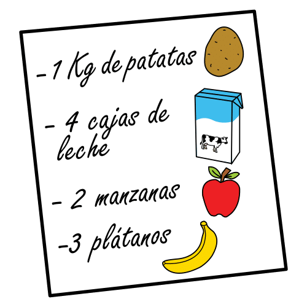
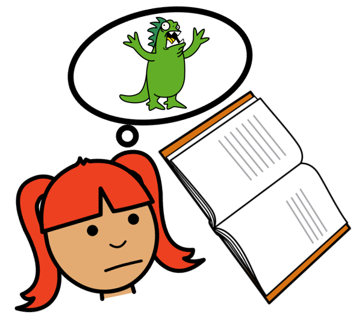

Diccionario
Condición
 Definición:
Situación o exigencia necesaria para hacer o crear algo.
Ejemplo:
Las condiciones del concurso es crear una receta con patatas, manzanas, leche y plátanos.
Desafío
 Definición:
Definición:
Situación difícil a la que alguien se enfrenta.
Ejemplo:
Mi amiga ha superado el desafío del baile.
Ficticio
 Definición:
Definición:
Historia o cosa imaginada o inventada
Ejemplo:
Andrea ha dibujado una historia ficticia sobre un dragón y un perro.
Imaginación
 Definición:
Capacidad para inventar o pensar cosas diferentes a las que piensa todo el mundo.
Ejemplo:
Cuando yo leo uso mi imaginación.
Rúbrica
 Definición:
Definición:
Tabla que se utiliza para valorar lo aprendido.
Ejemplo:
La maestra usa la rúbrica para poner las notas.